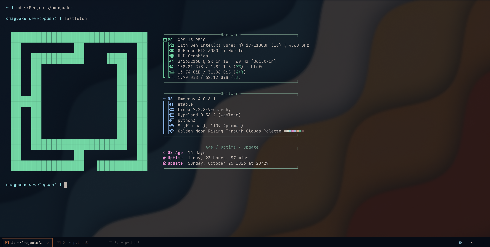
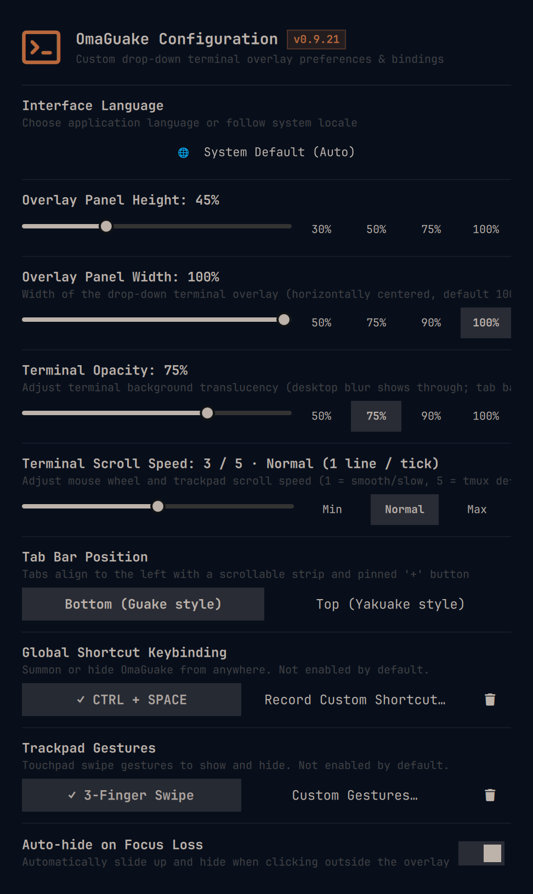

Instant drop-down toggle from anywhere. One-click suggested binding or record any custom shortcut with live conflict detection.
Natural Mac-style trackpad navigation. Swipe down to summon the terminal and swipe up to smoothly slide it away.
Clicking outside the overlay or refocusing other windows immediately and gracefully hides the terminal.
Tabs show the current directory and last command, and survive shell restarts via tmux. Place the tab bar at the bottom or top.
Configure panel height, width, background-only translucency with desktop blur, and 5-step scroll speed.
Follows your system locale by default with an English fallback, or pick a language manually in the settings panel.

